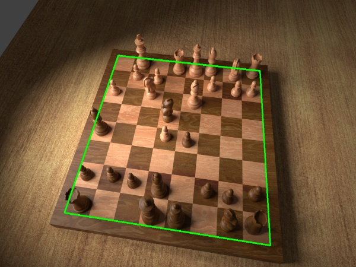
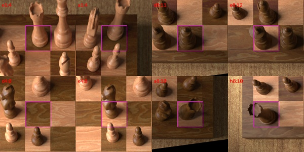
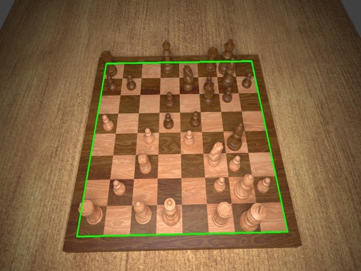
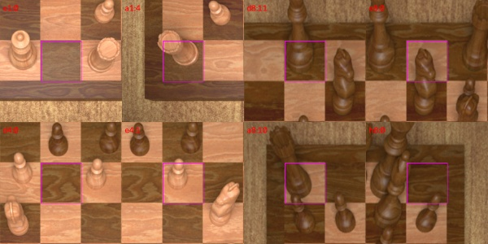
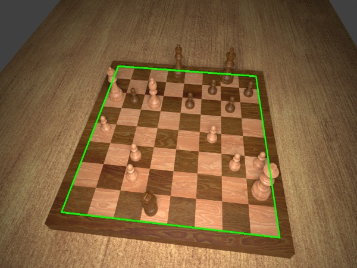
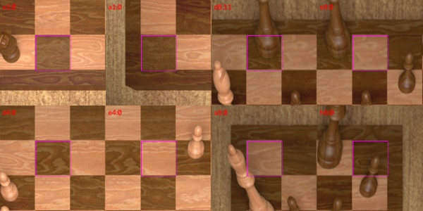
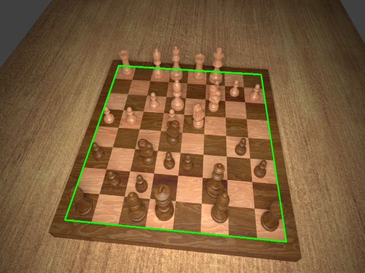
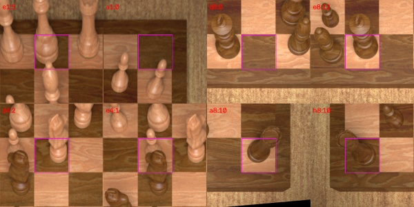

Source ground truth; not personal human approval. Magenta mask is target ground footprint; context may include neighbors. External regular-grid geometry is explicitly approximate relative to historical fitted B2 grids.
rn1qk2r/ppp1bppp/8/3pP2b/4n3/3B1N1P/PPP2PP1/RNBQR1K1


r2q1rk1/pp2npbp/3p1np1/P2pp3/2P1P1b1/2N2NP1/1P3PBP/R1BQ1RK1


3q2k1/5p1p/QpB1p1p1/8/P4P2/2P3PP/2P4K/3n4


r1b1kb1r/2q2pp1/p2ppn1p/1p2n3/3NP1PP/2N1BP2/PPP5/2KRQB1R


Source: Georg Wölflein and Ognjen Arandjelović, Dataset of Rendered Chess Game State Images, Chesscog OSF dataset, CC BY 4.0. Images resized/cropped; target outlines added.